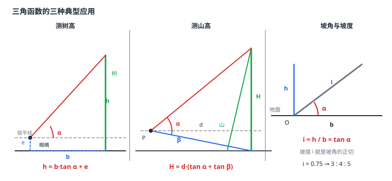

三角函数的应用（仰角·俯角·坡度）
三角函数真正被发明出来是为了测量。站在平地上想知道山有多高，量不了山，但能量出「看过去仰起多少度」——仰角就是视线与水平线的夹角，配上你到山脚的距离，一拍正切就得到高度差。俯角是视线向下与水平线的夹角；两者一起用，山高就是两个高度差之和。坡度则是工程语言里的正切：每前进 100 米水平距离上升多少米。这三条把「量得出来的角与距离」翻译成「量不出来的长度」，是解直角三角形（m2-07-02）在真实场景里的样子。
| 所属主题 | 锐角三角函数 |
|---|---|
| 所属模块 | 几何 |
| 课标学段 | 第四学段（7~9 年级） |
| 前置知识 | 解直角三角形、锐角三角函数（正弦·余弦·正切） |
| 核心素养 | 应用意识几何直观推理能力 |
教材定位
人民教育出版社《人教版（2024版）义务教育教科书·数学》
九年级下册第32章 锐角三角函数32.2 解直角三角形及其应用
对应九下 32.2 之下的 32.2.2 应用举例：仰角、俯角、坡角与坡度等测量问题。
说明
三个基本概念要先钉死。视平线：过观察者眼睛的那条水平线；水平线：过观察目标的水平线；仰角：视线与水平线在目标一侧的夹角，视线向上时叫仰角、向下时叫俯角。关键在于「水平线」而不是「地面」——只有当目标与观察者在同一水平高度上时，视线与地面的夹角才恰好等于仰角；一旦目标站得高或者低，视线与地面的夹角就和仰角差了一个角。
测物体的高度是最基本的应用。人站在离物体 b 米远的平地上，眼睛离地 e 米，物体顶端相对眼睛的仰角是 \alpha，则物体顶端相对地面的高度是 b\tan\alpha（这是从眼睛到物体顶端这段的水平投影为 b 的直角三角形给出的高度差），再加上眼睛离地的高度 e，物体高度 h=b\tan\alpha+e。别忘了加 e——这是这类题最常见的丢分点。
同时用仰角与俯角可以测山高。在山脚选一点 P，往上看山顶得仰角 \alpha，往上看山脚（另一个方向的山坡落点）得俯角 \beta，则 P 到山脚的水平距离记作 d（沿水平方向量）。山脚比 P 低 d\tan\beta，山顶比 P 高 d\tan\alpha，两者相加才是山高：H=d(\tan\alpha+\tan\beta)。是相加不是相减——山脚在 P 的下方，山顶在 P 的上方，P 夹在中间。
坡度是工程语言。坡度 i 定义为「每 100 米水平距离上升（或下降）多少米」，常写成百分数；坡角 \alpha 是坡面与水平面的夹角。因为水平长度 b 与铅直高度 h 构成直角三角形，\tan\alpha=h/b，而 h/b 正是坡度（以小数记），所以坡度就是坡角的正切。工程上坡度写成 i=h/b× 100%，与正切值只差一个百分号。
使用场景
架空线与拉线：电线杆的拉线与地面成某个角度，拉线长度与杆高已知时求拉线在地面上的投影，或反过来由投影求杆高——电力、通信施工的常规计算。
无障碍坡道与健身坡道：设计规范用坡度（常写成 1:12 之类的比）而不是角度来限制坡道陡缓，设计时要在坡度、坡长、升高量之间做取舍——坡度越大越省材料但越陡。
注意点
仰角、俯角都是视线与水平线的夹角，不是与地面的夹角。目标与观察者不在同一水平高度时，这两个角不相等；画图时先画视平线，再从目标处画一条水平线，视线与这条水平线的夹角才是题目给的那个角。
算物体高度别忘了观察点的高度。人眼离地 1.6 米左右不算小，题目若给了「眼睛离地多少米」或「站在高台上」，必须把这一段加进高度里；不写这一句，答案会小一截。
仰角俯角同时出现时求的是「和」不是「差」：观察点把山体分成上下两段，一段向上、一段向下，两段高度差相加才是整座山高。
坡度的分母是水平长度，不是斜面长度。坡度 i=h/b 里的 b 是水平投影，斜坡长 l 是斜边——两者在坡角较大时差得很远，不要混用。
证明

图 1：左——测树高要加上眼睛高度；中——山顶仰角与山脚俯角相加得山高；右——坡度 i = h/b 就是坡角的正切
证明
结论 1测树高（或其他标杆）时，物体高 = 水平距离 × \tan\alpha + 测量者眼睛离地高度。
设树高为 h，观测点到树底的水平距离为 b，观测者眼睛离地 e，视线与水平线的夹角为仰角 \alpha。过眼睛作水平线，与树干交于点 M，则 EM=b、\angle E=\alpha，且 M 在树身上。由 \tan\alpha=EM/EM' 得 EM'=b\tan\alpha，其中 EM' 是从眼睛高度到树顶的高度差。再加上眼睛离地的 e，得 h=b\tan\alpha+e。若忽略 e，量出来的树高会系统性偏小——这是这道题最常见的错误。
关键一步把「物体高」拆成「眼睛高度」加「眼睛以上的树高」。这一步拆分做错，整道题的答案就会差一个固定的 e。
结论 2测山高（山顶在山脚正上方）时，山高 = 水平距离 × (\tan\alpha+\tan\beta)。
设观测点为 P，山脚落点为 C，山顶为 T（T 在 C 正上方），P 到 C 的水平距离为 d。\alpha 是 P 看山顶的仰角，\beta 是 P 看落点的俯角。山体把 P 到 T 的竖直高度差分成两段：P 到 C 水平面的高度差 =d\tan\beta（俯角一侧，由 \tan\beta=\dfrac\text高度差d 得），C 平面到山顶的高度差 =d\tan\alpha（仰角一侧，同理）。两段相加得山高 H=d(\tan\alpha+\tan\beta)。
关键一步仰角与俯角对应的是两段不同的高度差，必须相加而不是相减。俯角定的是「观测点比落点高多少」，仰角定的是「山顶比观测点高多少」，两段首尾相接。
结论 3坡度等于坡角的正切，即 i=h/b=\tan\alpha。
在坡角示意图中，坡面、铅直线与水平面构成直角三角形，坡角 \alpha 的对边是铅直高度 h，邻边是水平长度 b。按正切定义 \tan\alpha=h/b，而这个比值正是坡度 i 的定义（每前进单位水平距离上升的高度）。所以 i=\tan\alpha。若 i=0.75，则 h:b=3:4，斜边比 5，得到 3:4:5 这个常见三角形。
关键一步坡度与坡角用的是同一个直角三角形里的同一个比，只是斜边那条边被省掉了。把 i 转成整数比，题目往往就变成了勾股或相似的问题。
动手实验
选一个晴朗的日子，在你家附近的空地上量一次树高：找一段平直的街道，用步测或卷尺量出到树根的距离 b（站在离树较远、仰角看起来较小的地方，误差会小），蹲下平视记下眼睛高度 e，用手机测出树顶相对眼睛的仰角 \alpha（或用一根长杆与地面成 \alpha 角、目测杆顶是否对准树顶来「造」出这个角）。算出 h=b\tan\alpha+e，再用卷尺量树高核对，误差通常来自 b 的测量与仰角的取景。换个位置再做一次，两次结果接近才说明方法可靠——同一方法在不同位置得到接近的值，是野外测量最基本的自检。
解题思路
测量类题目五步：① 把场景翻译成直角三角形（谁在观察点、谁是目标、水平距离在哪、角度是哪个）；② 标出视平线与目标的水平线，确认题目给的是仰角还是俯角；③ 选公式——求「水平距离对应的竖直变化」用正切，求「斜边对应的竖直分量」用正弦，求「斜边对应的水平分量」用余弦；④ 代入求值；⑤ 检查单位、正负与实际意义（高度不能为负、观察点高度是否已计入）。
带眼睛高度或站台高度的题，先把「观察点自己的高度」单独摘出来，最后再加上去：h=b\tan\alpha+e。摘出来比混着算更不容易漏。
坡度题的三种问法对应三种算法：求坡角的三角函数值——坡度直接就是正切值；求坡角是多少度——初中不做；求坡长或铅直高度——先由坡度定出三边比（如 i=\dfrac34 对应 3:4:5），再用正弦余弦或勾股算。
按场景的例题
例 1（场景：测量与工程） 平地测树高
在平地上测一棵树的树高。测得树根到观察点的水平距离为 20 米，树顶的仰角为 45^\circ，观察者眼睛离地 1.6 米。求这棵树的树高。
解：作图：观察点 P 在地面，树根 B 与 P 相距 b=20 米，树顶 T 在 B 正上方。先求眼睛 E 到树顶的高度差：这段的水平投影是 20 米，垂直高度差 =b\tan\alpha=20×\tan45^\circ=20× 1=20（米）。树高还要加上眼睛离地的 1.6 米：h=20+1.6=21.6（米）。回代验算：从眼睛到树顶这段的斜边长 =\sqrt20^2+20^2=20\sqrt2 米，铅直高度差 20 米小于斜边长，合理 \checkmark。
答：树高 21.6 米。
例 2（场景：方案选择） 登山路线勘测时测山高
在山脚附近选一点观测，测得山顶的仰角为 30^\circ、山脚另一侧落点的俯角为 45^\circ，观测点到该落点的水平距离为 100 米（山体竖直，山顶就在该落点正上方）。求山的高度。
解：设观测点为 P，山脚落点为 C（山顶 T 在 C 正上方）。以 P 为界，山体分成上下两段。第一段（P 到山顶）：水平距离也是 100 米，山顶高出 P 的高度 =100×\tan30^\circ=100×\sqrt3/3=100\sqrt3/3（米）。第二段（P 到山脚落点）：俯角 45^\circ，水平距离 100 米，山脚低于 P 的高度 =100×\tan45^\circ=100（米）。两段相加：H=100\sqrt3/3+100\approx 57.74+100=157.74（米）。回代验算：57.74^2+100^2\approx 3334+10000=13334，正是从观测点到山顶那段斜边的平方（水平距 100、高度差 57.74），三者自洽 \checkmark。
答：山高约为 100\sqrt3/3+100 米（约 157.7 米）。
例 3（场景：生活优化） 小区健身坡道的坡度与坡长
小区新修一条健身坡道，设计规定坡度为 0.75（即每 100 米水平距离上升 75 米）。已知这条坡道的斜面长是 100 米。求坡道的铅直高度、水平长度，以及坡角的正弦值与余弦值。
解：坡度即正切值：\tan\alpha=h/b=0.75=\dfrac34。由相似比可知对应的三边比为「对边 : 邻边 : 斜边 =3:4:5」，于是 \sin\alpha=3/5、\cos\alpha=\dfrac45。已知斜面长（斜边）100 米，铅直高度 h=100×\sin\alpha=100×\dfrac35=60（米），水平长度 b=100×\cos\alpha=100×\dfrac45=80（米）。回代验算：60^2+80^2=3600+6400=10000=100^2，符合勾股定理；坡度核对 60/80=0.75，与题设一致 \checkmark。
答：铅直高度 60 米，水平长度 80 米；坡角的正弦为 \dfrac35、余弦为 \dfrac45。
常用推论
三角函数把「量得出来的」换成「量不出来的」：角度和水平距离都是拿尺子能测的，高度却是测不了的——这是测量学的核心矛盾，而锐角三角函数就是那把换算的尺子。反过来，只要一个未知量能配出一副直角三角形，它就进入了「可测」的行列；配不出直角三角形的问题（如已知两边求角）在初中就是无解的。
三个应用场景其实共用同一副骨架：测树高是「仰角 + 一段水平距离」，测山高是「仰角 + 俯角 + 一段水平距离」，坡度题是「一段斜边 + 一个比值」。它们的差别只在于题目给的是仰角、俯角还是坡度，以及已知的是斜边还是水平距离——换场景不换结构，这是做应用题最省力的判断方式。
工程上用坡度而不用角度，是因为角度不便于施工：坡度能直接换算成「每 100 米挖填多少方土」，也便于与技术规范对照；角度则更适合分析与设计。同一个量在两个领域用两套语言表达，正是数学「一数多形」的典型例子——而换算的桥梁，就是正切。
易错点
错测树高时算出 b\tan\alpha 就直接作答。
为什么错漏掉了观察者眼睛离地的那一段高度。仰角给出的是「目标相对眼睛」的高度差，不是相对地面的高度，差的就是眼睛高度这一截。
正确物体高度 h=b\tan\alpha+e；e 是观察点离地高度（站在高台上时还要加台高）。
错山高用仰角段与俯角段相减：H=d\tan\alpha-d\tan\beta。
为什么错把上下两段的相对关系搞反了。俯角对应的是山脚低于观测点的那一段，与仰角段不在同一侧，两段是首尾相接而不是首尾同向。
正确H=d(\tan\alpha+\tan\beta)；画一条过观测点的水平线，山脚在线下、山顶在线上，整条山高跨越这条线。
错坡度 i=0.75 的坡道上，坡面长 100 米，于是铅直高度 =100×0.75=75 米。
为什么错把斜坡长当成了水平长度。坡度的定义是「铅直高度与水平长度之比」，分母是水平投影而不是斜坡本身；两者在坡角较大时差得很远（本题正确答案是 60 米而不是 75 米）。
正确先把坡度换算成三边比（0.75=\dfrac34 对应 3:4:5），再用正弦、余弦从斜边求其余两边。
直观理解
测量学的困难在于：想量的东西（山高、树高、楼高）太大，量不了；能量的是角度和距离。用三角函数搭一座桥，中间只隔一副直角三角形——桥的两端是「量得到的角」和「量得到的水平距离」，桥中间那副三角形把两边翻译成第三个量。三种应用只是这座桥的三种架法：仰角架法从下往上量，俯角架法从上往下量（两个架法接起来就是山高），坡度架法则干脆把「比值」直接架在斜边与水平之间（图 1）。桥的钢架是相似三角形，桥的榫卯是勾股定理——所以这两件老工具一点没被淘汰，只是被请到了三角函数这块招牌底下。